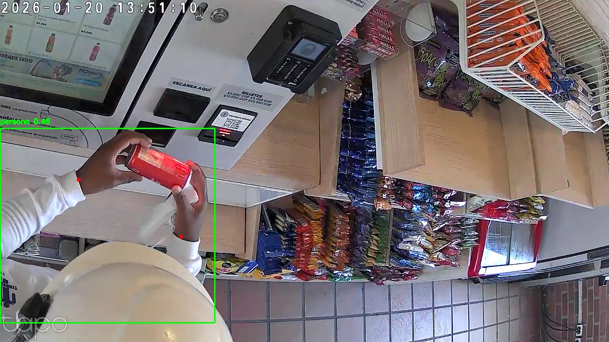
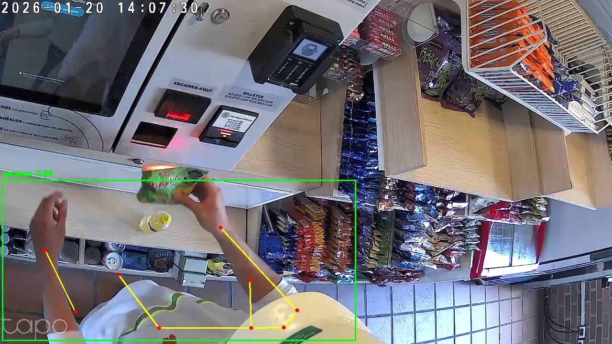
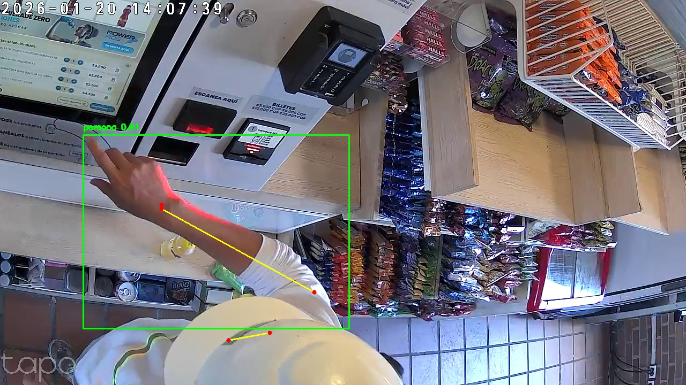
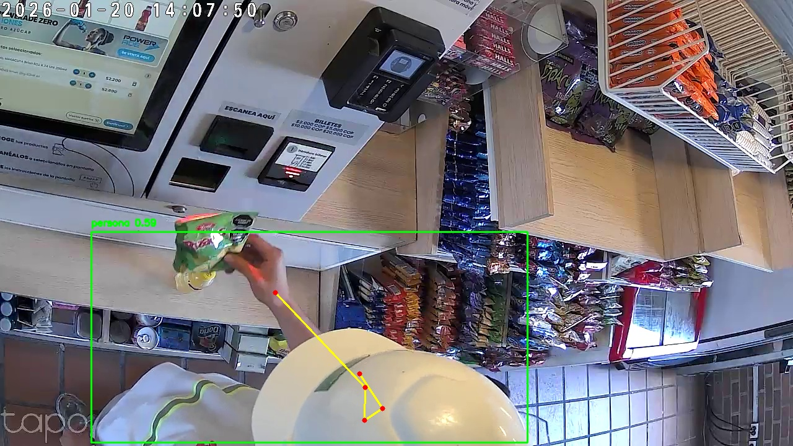

Informe de Análisis de Mermas | Video: 20260120_133819_tp00053
Generado: 04/05/2026 13:15:41
| # | Severidad | Tipo | Tiempo | Persona | Confianza | Descripción | Captura |
|---|---|---|---|---|---|---|---|
| 1 | ALTA | Movimiento Rapido | 00:12:50 - 00:12:51 | Persona #0 | 85% | Persona #0 realizó un movimiento rápido de mano (left wrist) hacia la zona de estanterías. Velocidad pico: 233px/frame. Patrón consistente con agarre rápido de producto. |  |
| 2 | ALTA | Movimiento Rapido | 00:12:52 - 00:12:55 | Persona #0 | 85% | Persona #0 realizó un movimiento rápido de mano (right wrist) hacia la zona de estanterías. Velocidad pico: 273px/frame. Patrón consistente con agarre rápido de producto. | |
| 3 | ALTA | Movimiento Rapido | 00:29:09 - 00:29:11 | Persona #4 | 85% | Persona #4 realizó un movimiento rápido de mano (right wrist) hacia la zona de estanterías. Velocidad pico: 250px/frame. Patrón consistente con agarre rápido de producto. |  |
| 4 | ALTA | Movimiento Rapido | 00:29:17 - 00:29:20 | Persona #6 | 78% | Persona #6 realizó un movimiento rápido de mano (right wrist) hacia la zona de estanterías. Velocidad pico: 190px/frame. Patrón consistente con agarre rápido de producto. |  |
| 5 | ALTA | Movimiento Rapido | 00:29:18 - 00:29:24 | Persona #6 | 85% | Persona #6 realizó un movimiento rápido de mano (right wrist) hacia la zona de estanterías. Velocidad pico: 247px/frame. Patrón consistente con agarre rápido de producto. | |
| 6 | ALTA | Movimiento Rapido | 00:29:26 - 00:29:31 | Persona #7 | 67% | Persona #7 realizó un movimiento rápido de mano (right wrist) hacia la zona de estanterías. Velocidad pico: 115px/frame. Patrón consistente con agarre rápido de producto. |  |
| Tipo | Cantidad | Descripción |
|---|---|---|
| Merodeo | 0 | Permanencia prolongada en zona de estanterías sin transacción |
| Movimiento Rápido | 6 | Agarre rápido de producto desde estantería |
| Ocultamiento | 0 | Postura de ocultamiento de producto en cuerpo |